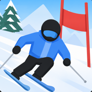

JustSki does not collect any personal data.
Last updated: 26 August 2026
The app keeps your gold, your best times for each mountain, and the items you have bought. All of it is stored on your device using the system's standard preferences store. None of it is transmitted anywhere, and none of it identifies you. Deleting the app removes it.
If you choose "Race a Friend Nearby", the app uses Apple's MultipeerConnectivity framework to find other devices running JustSki on the same local network, over Wi-Fi or Bluetooth. While a race is running, devices exchange the position and speed of each skier so everyone sees the same race.
This happens directly between devices. There is no server, nothing is recorded, and the exchange stops when the race ends. Your device's name is visible to other players in the lobby, because that is how you pick who to race.
Nearby multiplayer is optional. Every other part of the game works without it.
JustSki is suitable for all ages and collects nothing from anyone, including children.
Questions about this policy, or about anything else in the app, go to leon.cam.uk@gmail.com. The support page says what is useful to include.
If this policy ever changes, the updated version will be published at this same address and the date above will change.